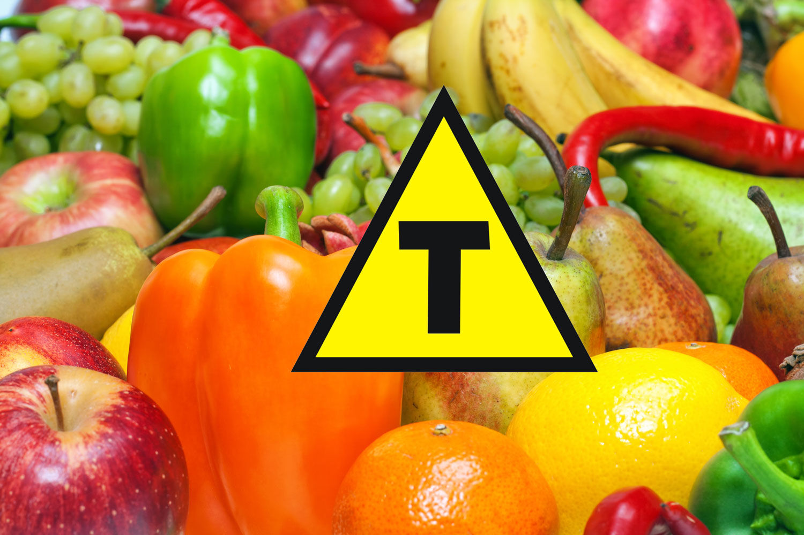

Alimentos transgenicos
O que é um alimento transgênico?
Um alimento transgênico, também conhecido como organismo geneticamente modificado (OGM), é aquele que tem seu material genético (DNA) alterado em laboratório para adquirir uma característica específica que não seria naturalmente encontrada na planta ou animal.

milho